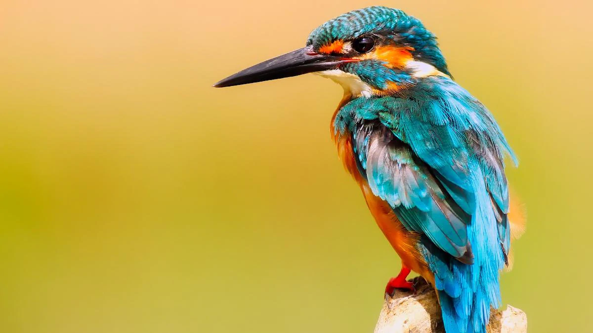

|  |
Kingfishers or Alcedinidae are a family of small to medium-sized, brightly colored birds in the order Coraciiformes. They have a cosmopolitan distribution, with most species found in the tropical regions of Africa, Asia, and Oceania. The family contains 114 species and is divided into three subfamilies and 19 genera. All kingfishers have large heads, long, sharp, pointed bills, short legs, and stubby tails. Most species have bright plumage with only small differences between the sexes. Most species are tropical in distribution, and a slight majority are found only in forests. They consume a wide range of prey usually caught by swooping down from a perch. While kingfishers are usually thought to live near rivers and eat fish, many species live away from water and eat small invertebrates. Like other members of their order, they nest in cavities, usually tunnels dug into the natural or artificial banks in the ground. Some kingfishers nest in arboreal termite nests. A few species, principally insular forms, are threatened with extinction. In Britain, the word "kingfisher" normally refers to the common kingfisher. |